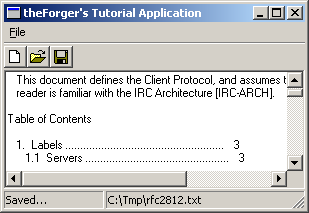

Example: app_three

As with all common controls, you must call InitCommonControls()
BEFORE you try and use them. You will need to #include <commctrl.h>
in order to use this function and to get the functions and declarations necessary for
use of the Common Controls. You will also need to add comctl32.lib
to your linker settings if it is not already there. Note that InitCommonControls()
is an older API, and for more control you can use InitCommonControlsEx()
(aka InitCommonControlSex()) which is also required for the most recent common controls. However
since I'm not using any of the advanced features, InitCommonControls() is adequate
and simpler.
You can create a toolbar using CreateToolbarEx() but I'm not going
to, so there. First thing you need to do is actually create the toolbar...
hTool = CreateWindowEx(0, TOOLBARCLASSNAME, NULL, WS_CHILD | WS_VISIBLE, 0, 0, 0, 0,
hwnd, (HMENU)IDC_MAIN_TOOL, GetModuleHandle(NULL), NULL);
That's simple enough, TOOLBARCLASSNAME is a constant defined by the
common control headers. hwnd is the parent window, the one you
want to put the toolbar in. IDC_MAIN_TOOL is an identifier that you can
use later to get the HWND of the toolbar using GetDlgItem(),
if you so desire.
// Send the TB_BUTTONSTRUCTSIZE message, which is required for
// backward compatibility.
SendMessage(hTool, TB_BUTTONSTRUCTSIZE, (WPARAM)sizeof(TBBUTTON), 0);
This message is required to let the system figure out which version of the common controls library you are using. Since new versions add new stuff to the structure, by giving it the size it can figure out what behaviour you are expecting.
First we declare a TBBUTTON and TBADDBITMAP
TBBUTTON tbb[3];
TBADDBITMAP tbab;
And then we add the standard bitmaps to the toolbar, using the imagelist predefined in
the common control library...
tbab.hInst = HINST_COMMCTRL;
tbab.nID = IDB_STD_SMALL_COLOR;
SendMessage(hTool, TB_ADDBITMAP, 0, (LPARAM)&tbab);
Now that we have our images loaded up, we can add some buttons that use them...
ZeroMemory(tbb, sizeof(tbb));
tbb[0].iBitmap = STD_FILENEW;
tbb[0].fsState = TBSTATE_ENABLED;
tbb[0].fsStyle = TBSTYLE_BUTTON;
tbb[0].idCommand = ID_FILE_NEW;
tbb[1].iBitmap = STD_FILEOPEN;
tbb[1].fsState = TBSTATE_ENABLED;
tbb[1].fsStyle = TBSTYLE_BUTTON;
tbb[1].idCommand = ID_FILE_OPEN;
tbb[2].iBitmap = STD_FILESAVE;
tbb[2].fsState = TBSTATE_ENABLED;
tbb[2].fsStyle = TBSTYLE_BUTTON;
tbb[2].idCommand = ID_FILE_SAVEAS;
SendMessage(hTool, TB_ADDBUTTONS, sizeof(tbb)/sizeof(TBBUTTON), (LPARAM)&tbb);
Here we've added a New, Open and Save As button using the standard images, which is always
a good idea since people are used to seeing them and they know what they mean.
The indexes of each image in the imagelist are defined in the common control headers and are listed in MSDN.
We have assigned each button an ID (ID_FILE_NEW etc...) which is identical to the IDs of the
equivalent menu items. These buttons will generate WM_COMMAND messages identical to the menu,
so no extra processing is required! If we were adding a button for a command that didn't already
have a menu item, we would simply pick a new ID for it and add a handler to WM_COMMAND.
If you're wondering what's up with the funky wParam I passed to TB_ADDBUTTONS
it's doing a calculation of the number of buttons in the array tbb so that we don't need to
hardcode a value. If I put in 3 instead it would still be correct, but as soon as I added another
button I'd have to change it to 4 and in programming that's bad... you want one change to cause
as few other changes as possible. For example if the sizeof(TBBUTTON) was 16 bytes
(I made that up, it actually varies by platform) then since we have 3 buttons the sizeof(tbb)
would be 16 * 3 or 48. Therefor 48/16 gives us the number of buttons, 3.
hStatus = CreateWindowEx(0, STATUSCLASSNAME, NULL,
WS_CHILD | WS_VISIBLE | SBARS_SIZEGRIP, 0, 0, 0, 0,
hwnd, (HMENU)IDC_MAIN_STATUS, GetModuleHandle(NULL), NULL);
And then (optionally) set the number of sections that you want. If you don't set any,
it will simply have one section using the entire width of the bar, and you can set and retreive
the text with SetWindowText() as with many other controls. For more than one
part, you need to give the widths of each section, and then use SB_SETTEXT to
set the text of each one.
To define the widths, we declare an array of ints, where each value is the
width in pixels of a section. If you want one section to use up any remaining space, set
it's width to -1.
int statwidths[] = {100, -1};
SendMessage(hStatus, SB_SETPARTS, sizeof(statwidths)/sizeof(int), (LPARAM)statwidths);
SendMessage(hStatus, SB_SETTEXT, 0, (LPARAM)"Hi there :)");
The wParam again is our calculation of how many elements are in the array. Once we're done
adding sections, we set the first one (index 0) to see it in action.
WM_SIZE code from before, they are going to overlap
with the edit control we added in the previous examples. This is a simple matter to correct...
in WM_SIZE, we move the tool and status bars into position, and then subtract their
heights and positions from the client area so that we can move our edit control to fill the remaining
space...
HWND hTool;
RECT rcTool;
int iToolHeight;
HWND hStatus;
RECT rcStatus;
int iStatusHeight;
HWND hEdit;
int iEditHeight;
RECT rcClient;
// Size toolbar and get height
hTool = GetDlgItem(hwnd, IDC_MAIN_TOOL);
SendMessage(hTool, TB_AUTOSIZE, 0, 0);
GetWindowRect(hTool, &rcTool);
iToolHeight = rcTool.bottom - rcTool.top;
// Size status bar and get height
hStatus = GetDlgItem(hwnd, IDC_MAIN_STATUS);
SendMessage(hStatus, WM_SIZE, 0, 0);
GetWindowRect(hStatus, &rcStatus);
iStatusHeight = rcStatus.bottom - rcStatus.top;
// Calculate remaining height and size edit
GetClientRect(hwnd, &rcClient);
iEditHeight = rcClient.bottom - iToolHeight - iStatusHeight;
hEdit = GetDlgItem(hwnd, IDC_MAIN_EDIT);
SetWindowPos(hEdit, NULL, 0, iToolHeight, rcClient.right, iEditHeight, SWP_NOZORDER);
Unfortunately it's a somewhat long code snippet, but it's quite simple... toolbars will
auto position themselves when sent the TB_AUTOSIZE message, and status bars will do the
same if you send them WM_SIZE (the common control libraries are not known for consistancy).